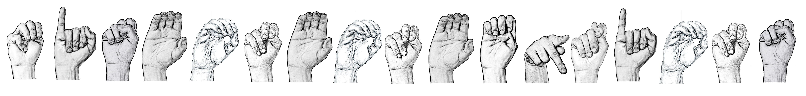

Misconceptions

We created this website as a means of educating people who are unfamiliar with deaf culture. Our intent is to debunk common myths about hearing loss in order to reduce the generalizations that often arise out of them. We will discuss terminology as well as myths regarding hearing loss and repairing, age, and sign language. You have the option to scroll from top to bottom or click your desired section on the sticky navigation bar.